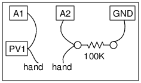

Connect the wires and resistors as shown in the figure. Set PV1 to 3 volts
Hold the tip of the wires, marked as 'hand', tightly by two hands
Current through the 100K resistor I = A2 / 100K
Electrical resistance of your body is given by (A1-A2)/I
Perform the same experiment using AC from WG instead of the DC from PV1.
The resistance is mainly due to the skin. With AC, skin acts as the dielectric of a capacitor. Due to it more current flows, for a given AC voltage, compared to DC.